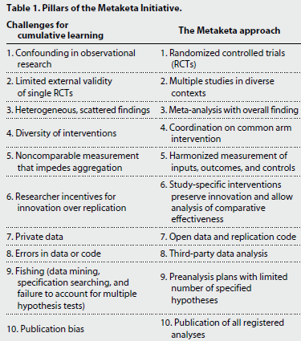
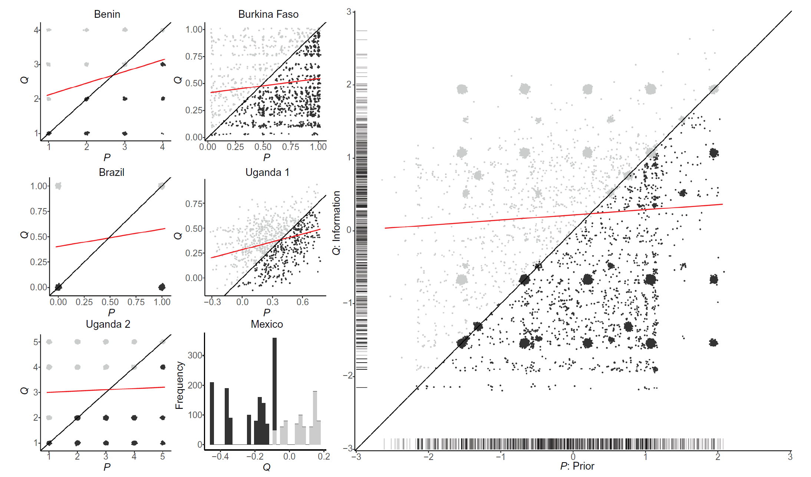
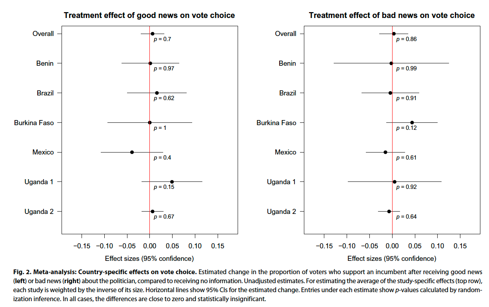
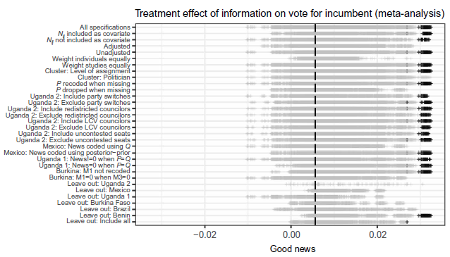
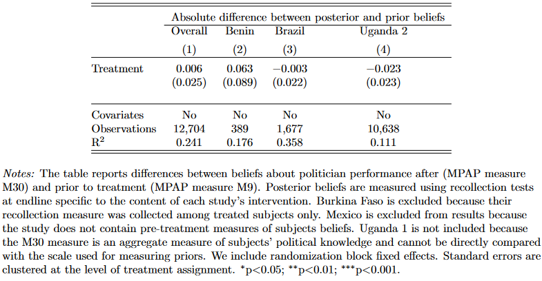
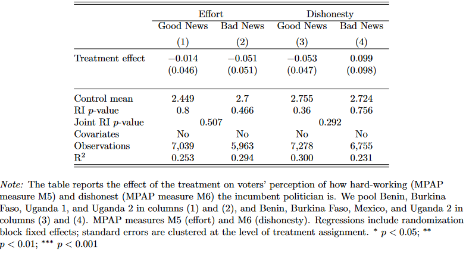

Representation and Accountability II
Agenda
Power
Multivariate Regression
Dunning et al. (2019)
Democracy and Accountability
Basic idea thus far:
If voters can observe how politicians behave, votes can discipline politicians, then we’ll have better (behaved) politicians
Democracy and Accountability
Funders have had the same idea!
- A lot of money has been spent on “information interventions”
- Tell voters of politicians’ good/bad behavior
- And yet, we do not really know if they work
- It has been difficult to accumulate information
Barriers hindering accumulation
What is accumulation?
- Building knowledge across studies
What makes it difficult?
- Limited replication
- Heterogeneity of design and measurement
- Publication bias
Publication bias
Do you think it is easier to publish a study that finds an effect or one that does not find any effect?
What are the consequences for what we, as a discipline, “know”?
Facilitating accumulation
What solutions are discussed by the authors?
- Pre-registration
- Harmonizing theory, measurement, and estimation
- Publication of null results
Facilitating accumulation

Models of political accountability
Accountability requires that voters:
- Observe performance
- Attribution (who’s fault?)
- Benchmarking (is this good or bad relative to what I thought?)
- Learn from what they see
- Have credible alternatives
Models of political accountability
What does the literature say?
- Theory is mixed
- Partisan and sectarian attachments are strong
- Voters may be reluctant to update their beliefs
- Experimental results are mixed
- Demobilization
- Limited recall
- Ephemeral effects
Research Design
Intervention
- Information (Q) on political performance
- Legislative behavior
- Spending irregularities
- Budget allocation
- Candidate experience
Research Design
Is the treatment good news, or bad news?
Some voters will be pleasantly surprised (Good News)
Others will be disappointed (Bat News)
Depending on their prior beliefs (P) of how well politicians were performing
Ecological Validity
How is information disseminated?
What is the real world activity being tested?
Describing Information

- good news group is above the line
- correlation is positive but weak
Research Design
Core hypotheses:
- Good news increases voter support for incumbents
- Bad news decreases voter support for incumbents
- Effect of information will increase with gap between Q and P (the “suprise” degree)
- Strongest for nonpartisan and non-coethnic voters
Findings

Findings

Why the null results?
- Source credibility?
- No…
- Lack of retention?
- Lack of updating on politician performance?
- Lack of updating about politician quality?
- Intervention is too weak?
Statistical Power
Can we update on “null results”?
Statistical power is the probability of correctly detecting a true effect in a study
Higher power reduces the risk of a false negative
- The larger your sample size and the bigger the effect size, the more powered you are, for a given level of statistical significance
Statistical Power
Recall the interpretation of p-values:
- The probability of observing a test statistic at least as extreme as the one you observed if the true parameter value is zero
- Or, the probability of rejecting the null hypothesis when the null was true
- This is called a “Type I” error: a false positive
- We also have “Type II” errors: a false negative
Statistical Power
Power is the probability of correctly accepting the alternative hypothesis
The probability of a true positive
Equals (1 - probability of type II error)
The common threashold in the discipline is 80% power
You can check out the EGEN power calculator to understand better
Statistical Power
Null results were not “foregone conclusion”?
- 80% power
- Change the vote of 5/100 voters
- Change turnout of 4/100 voters
Findings

Findings

Policy Implications
Should interventions to provide information be re-thought?
Why did Ferraz and Finan (2011) find an effect but here they do not?